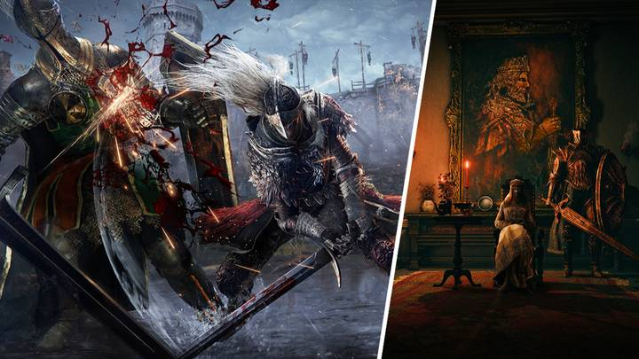
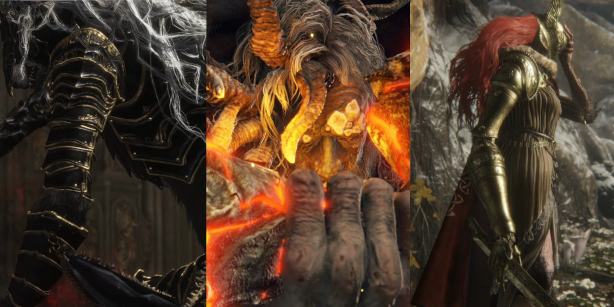

Elden Ring contains a wide variety of weapons that adapt to each play style of the game. There are a multitude of stats that a player can progress in and as a result a multitude of weapons for each stats. Inherently there are the best and worst weapons to use and this post will cover that.
Best Weapons

Elden Ring is an insanely large game and because of that there are too many npcs to really count. Each npc has its own unique questline with its own unique rewards and benefits. Some questlines can provide you a bigger advantage than others and here are the best ones.
Best Questlines

Elden Ring has so many mysterious and exciting bosses. As you progress through the game you will encounter a wide variety of bosses each with their own gimmicks. Some bosses provide a more in-depth and thrilling experience and this post will cover this
Best Bosses